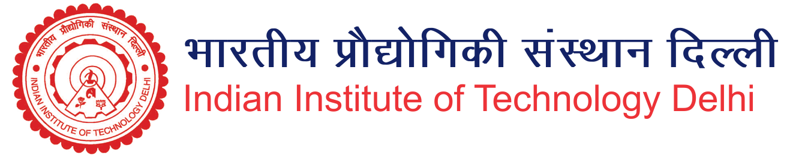

Centre for Rural Development and Technology

Professor Vivek Kumar
Email:vivekk@rdat.iitd.ac.in
Mob:+91-9412619735
Work: 91-11-26596581
Office: Block III - 291, CRDT, IIT Delhi
Email LinkedIn Google Scholar
ResearchGate
Email:vivekk@rdat.iitd.ac.in
Mob:+91-9412619735
Work: 91-11-26596581
Office: Block III - 291, CRDT, IIT Delhi
Email: vivekk@iitd.ac.in
Office: Block III - 291, Centre for Rural Development and Technology, IIT Delhi, Hauz Khas, New Delhi, 110016
Thank you for visiting!